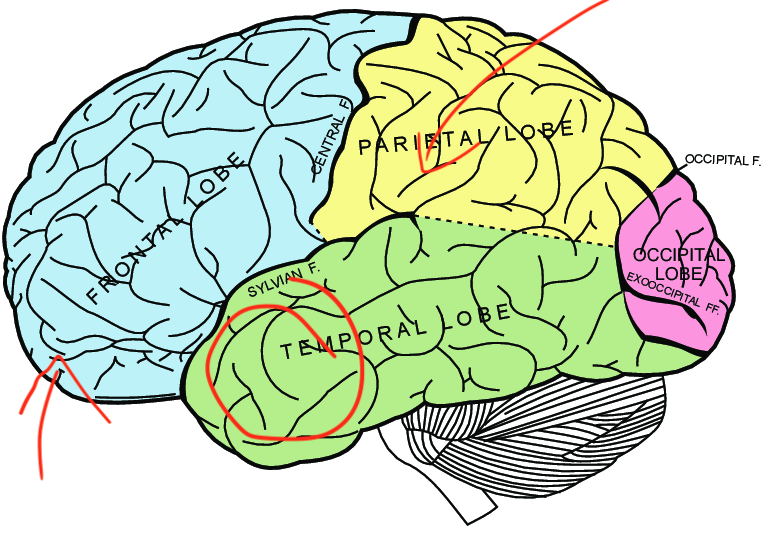

Such
a wild game. AlphaZero plays with white.
Such
a wild game. AlphaZero plays with white.
The Unreasonable Feasibility Of Playing Chess Under The InfluenceTL;DR The wonderful tradition of playing chess drunk, Marr’s levels of analysis, AlphaZero, and Iterated Amplification and Distillation. |
Updated | ||
|---|---|---|---|
| Author | Jan Kirchner | ||
Please enjoy this clip of the reigning chess world champion Magnus Carlsen playing a game of hyperbullet (30 sec total per player) while inebriated.
As the commenters are quick to point out, Magnus winning this game is partially due to his opponent blundering their Queen a couple of moves after Magnus takes over. But still. Even after a full night of sleep and being highly caffeinated I would struggle to complete a game of chess in 30 seconds[1]. Winning while chanting party bangers, and complaining about the state of one’s own body, is kind of impressive.
[1]
Much less win against a 2400 opponent.
Magnus is standing on the shoulders of giants in this game. Drinking and chess have been going hand in hand since at least Paul Morphy, whose family started the Murphy brewery. Since Morphy, two former world champions stand out as particularly heavy drinkers, Alexander Alekhine and Mikhail Tal. The story of Mikhail Tal, the Magician from Riga, is interesting as he was drinking and smoking en masse while producing more brilliancies[2] than any other player.
[2]
A term in chess that is not rigorously defined, but roughly equates to ” an extremely powerful move that is usually not obvious but that almost automatically wins (or draws, if you are losing) the game. Some would call this move a “brilliant” one”.source
The Magician from Riga in his element.
His play under the influence might be the source of the common urban myth that drinking might improve one’s play. Tal’s heavy drinking was likely not a character flaw, but presumably represented a type of self-medication for his congenital chronic illnesses. The same can not be said for another grandmaster, who triggered one of many[3] episodes of chess drama by drinking heavily and “losing it” live on Twitch during a chess streaming session. On the other hand, he was awarded the infamous title “best drunk chess player in the world” by world championship challenger Fabiano Caruana. Beyond the players, there is “alcoholic chess”, the “bongcloud opening”, and of course, the recent Netflix hit show “The Queen’s Gambit” about a drug-addicted, femaleBobby Fisher. Magnus Carlsen winning a game of hyperbullet after having a drink or two might appear impressive to an outsider - the aficionado just calls it “Tuesday”.
[3]
Who would have thought!
What’s my point? I don’t think we should be surprised that chess players drink alcohol. They are, visibly, human, which means the prior probability of them having had a drink in the last year is (based on location) somewhere between 60 and 100%. I couldn’t find more specific numbers for Twitch streamers in their mid- or late-twenties, but you probably have a decent gut feeling for that demographic. Also, given the stigma that chess is a game for four-eyes and dweebs, it’s not surprising to find countersignaling in the form of leather jackets and drug consumption. No mysteries there.
Benny Watts, professional chess-playing “bad boy” from the Queen’s Gambit.
The thing that boggles my mind is something else: How can chess players get blackout drunk and still play decent chess? Chess was once considered the pinnacle of human intellect. And while that perspective (perhaps rightfully) has fallen out of favor, I’d like to circle back to the fact that the only way that I win against drunk Magnus Carlsen is when he literally passes out during the game[4].
[4]
At which point I’d have decent drawing chances.
In this post, I want to propose an analogy with the type of AI architecture that currently dominates computer chess, and which might give us some ideas for why grandmasters can play decent chess while drunk. Perhaps there is even something we can learn from inebriated humans that is interesting for AI.
Which tool in our belt is best suited to understand complicated cognitive phenomena? David Marr’s three[5] levels of analysis appear like a good match[6]:
[5]
Theoriginal paper actually lists four, but they are confusing.
[6]
Actually, it’s the only tool I have. Send help. Or more tools.
I find it very instructive to look back at the very early days of the computer[7] and to see what people came up with when confronted with this new toy. After factoring a large number, researchers turned almost immediately to building a theorem prover, and then in 1948: chess. In the same year, Claude Shannon at Bell Labs published a paper containing a strategy for, in theory, playing flawless chess on a computer. This strategy is now known as the MiniMax decision rule and, informally, states that you should pick the chess move that gives you the best possible position (max), given that your opponent afterward will choose the move that gives you the worst possible position (min).
[7]
Despite being so relatively recent, it is very hard to find a source that is reasonably complete and correct. Almost everyone ignoresKonrad Zuse, or those who don’t ignore him ignore everything else. I spent way too much time diving into this a few years ago, but it seems super relevant to me.
What makes a position good or bad? If you care about winning, a position where you mate the opponent’s king is good, while a position where your own king is mated is bad[8].
[8]
A draw is simply a disgrace and should be avoided whenever possible.
A schematic of a game tree, where some of the leaf nodes have a value of positive infinity (win) or negative infinity (lose). These values are propagated upwards in the tree, and at each level either the maximum or the minimum gets carried over.
In theory, determining if a move is good or bad requires only that the minimax decision rule is applied repeatedly. I pick a move that seems good for me , then I put myself in my opponent’s shoes and pick a move that would be good for them , at which I pick again a move that seems good for me , etc. Eventually, we reach a position that is either a mate for me or for them. Then I know that I won’t go down that path in particular and I can go down a different path.
The problem with this becomes clear very quickly when we look at a portion of the tree with possible moves for a position late in the game:
A game tree from an endgame in chess based on the analysis of former world champion Mikhail Botvinnik.
A moderate amount of possible moves at each level of the game tree results in a combinatorial explosion and an intimidating amount of possible chess positions. It’s not uncommon that within 20 to 30 moves the pieces on the board are in a position they have never been in before.
Claude Shannon’s strategy was (and still is) impractical, but practicality is also not what we aim for at the computational level. Rather, Shannon’s MiniMax strategy provides us with a useful abstraction through which we can analyze chess further with Marr’s levels.
We will now brazenly skip half a century of chess history (including several AI winters, the first computer to beat the reigning world champion in 1996, and Centaur Chess) and arrive almost in the present day. While humans have been completely outclassed on the chessboard for almost 30 years now, computer chess was characterized as “solid and slow”, taking no risks and grinding down their human opponents by accumulating tiny advantages. This changed with AlphaZero, a chess computer from the wonder factory that is Deepmind, with a playing style that is a bit closer to the Romantics or Tal than most chess players would probably have expected. Grandmaster Peter Heine Nielsen says:
After […] seeing the games, I thought, ’well, I always wondered how it would be if a superior species landed on earth and showed us how they play chess. I feel now I know.
Such
a wild game. AlphaZero plays with white.
Why do people even still care about chess if no human has been able to compete with a computer for decades? On the one hand, chess has been called “the drosophila of artificial intelligence”, i.e. a well-controlled model organism with, nonetheless, a rich repertoire of interesting behaviors. On the other hand, AlphaZero stood out for being trained exclusively through self-play (i.e. without access to human games), and still blazing past the best chess computer at the time after just a few hours of training.
And despite only playing with itself, there are some striking parallels in the concepts that emerge in the model compared to those that humans use to evaluate the game. Consistently, the play of AlphaZero has been described as much more human-like compared to previous chess computers. On Marr’s algorithmic level, AlphaZero appears like an interesting candidate to evaluate for our goal of understanding human chess playing.
So how does AlphaZero work? It’s in essence a product of a recent revolution in deep learning that allows the training of deeper and more capable neural networks. These networks are then used to bypass the problem of combinatorial explosion: instead of exploring all the moves all the way to the end, the networks give reasonable suggestions for which moves appear particularly interesting, and which intermediate positions appear particularly favorable for which player. There are excellent explanations of the architecture outthere from a machine learning engineering perspective, but for this post, I instead want to follow the lead of Paul Christiano.
Paul Christiano argues that the training procedure for AlphaZero can be interpreted as an instance of Iterated Amplification and Distillation (IAD)[9].
[9]
Or “Iterated capability amplification”. Terminology is not quite set in stone yet.
Conceptually, IAD requires three components:
We can then iterate this procedure, and compute p* =D(A(D(A(….D(A(p)))))). If everything goes well, our prior p * will be getting better at every iteration, improving without bound or converging to a fixed point, p=D(A(p)).
For learning to play chess, we might start with a very poor prior distribution p , which suggests mostly terrible moves but still performs slightly above chance[10]. In the previous section, we have already encountered a method to amplify the performance of this prior! Shannon’s MiniMax strategy tells us that we can traverse the game tree, putting ourselves in the shoes of our opponent at every second level, to evaluate whether moves are good or bad for us. Doing this is costly (combinatorial explosion), but since our search is guided by our “slightly better than chance” prior, we have hope that some of the sequences of moves we explore end up relevant to the game. Using our prior p in conjunction with some amount of exploration of the game tree will, in effect, provide us with a slightly more accurate, or amplified , distribution over moves in a position, A(p).
[10]
To get this, we might instantiate the prior randomly and then make it perform slightly better than random by creating two copies of the system and adopting the prior through traditional reinforcement learning and self-play. This is where the grounding of the prior comes from.
Using A(p) to play chess was de facto the way that all chess computers worked up until AlphaZero. People came up with ever cleverer prior distributions p and search strategies A(p) , and the superior speed and memory of modern computer systems were sufficient to leave human players in the dust. The novelty with AlphaZero[11] is the use of a very deep neural network to implement the prior p.
[11]
Am I being unfair to the people who came up with this usingneural networks for chess in 1999? Possibly.
The ResNet component of AlphaZero, source.
The big advantage of using this network is that there is a flexible operation for adopting the output of the network to a given target, the backpropagation algorithm. In the context of learning to play chess, the backpropagation algorithm allows us to perform the last step of IDA; given the move suggestions of the amplified prior A(p) , we can train an updated prior, **p*=D(A(p)) , which will reap some of the benefits of A(p)** without having to perform the costly search!
And that’s all the components we need to iterate the procedure, p* =D(A(D(A(….D(A(p)))))) , and to see if we approach a fixed point[12].
[12]
In case somebody who worked on the project ever reads this: Please don’t be mad. I can’t imagine the amount of blood, sweat, and tears that went into this.
 Note
that here AlphaZero is playing against a version of Stockfish that
has already adopted the new trick of IAD.
Note
that here AlphaZero is playing against a version of Stockfish that
has already adopted the new trick of IAD.
Looks like it! The performance of AlphaZero against the leading chess computer StockFish increases monotonically over training and asymptotically reaches a level slightly above it[13].
[13]
Stockfish, the goliath of computer chess, has by now caught up and overtaken the record set by AlphaZero.
We thus have a very powerful algorithm-level approximation to the ideal at the computational level. This implementation matches, and even outplays, Magnus Carlsen on his best day, while still playing in a distinctly human-like style. How might this algorithm be implemented in the brain? And, even more importantly, how can we make it drunk?
The kicker of Marr’s method is that once we have a particular algorithmic implementation, we can set out and try to find neural correlates. We have no guarantee of finding these correlates - in general, there are multiple possible algorithmic implementations, and there are no theoretical guarantees that we pick the one that evolution picked[14].
[14]
There are, however, weak hand-wavy arguments for why we might be lucky sometimes. In particular, themore general an algorithm, the more robust it tends to be to perturbations. Robustness is something that evolution “cares” a lot about. Generality is something that DeepMind cares a lot about (see alsoMuZero). Perhaps the number of totally general algorithm that can do all the things humans do is not that large? Sounds plausible, right?
But I have a good feeling about this one. Let’s see how far we can get.
Where’s the prior? First, which part of the brain might implement the neural network that computes the prior p for a given position? Given three decades of functional brain imaging, you’d expect that we have a pretty decent idea about which brain areas are active when chess experts evaluate a position?
Yeah, that would be nice, wouldn’t it? Studiesfrom the 90s highlight the importance of frontal and parietal areas.

Then, in the 2000s it was in vogue to attribute every kind of expert-level skill with a recurring guest on this Substack, the fusiform face area.
The arrows are supposed to point to the inside of the lobe.
The 2010s were marked by a shift of focus towards the posterior cingulate, orbitofrontal cortex, and right temporal cortex.
Again, the arrows are supposed to point to the inside of the lobe.
For [^2019](https://www.sciencedirect.com/science/article/abs/pii/S0031938418309351?dgcid=api_sd_search-api-endpoint) I found a paper where researchers found that the parietal cortex tends to be more involved in chess games in the rapid format (10 minutes + 10 seconds increment) than in the lightning format (1 minute), p=0.045.
And then nothing too enlightening since then.
If I was Scott Alexander or Zvi I’d comb through those papers and wring out insight. Maybe I can take into account that something like the “peak of the replication crisis in medicine” hit in 2016, and discredit things before that strongly? Maybe I can go through the methodologies, evaluate each paper based on its merits, and assemble a coherent whole that explains discrepancies through differences in experimental design?
I can’t bring myself to do that. And I also don’t think I have to. In AlphaZero the prior p is computed from a deep neural network that receives the board position and a possible move as input and returns an estimate for how good this move appears. This type of pattern processing is pretty much what the cortex overall is best at. In fact, it might not be too much of a stretch to characterize the cortex as one big prediction machine. So let’s just say that the prior p might probably be computed somewhere in the cortex.
This sounds vague, but it still excludes subcortical regions, the cerebellum, and the extended mind thesis. So it’s better than nothing!
Where’s the amplifier? The second important IAD component of AlphaZero is the amplification mechanism that boosts the prior p through exploration of the game tree. To identify a neural correlate, I first need to fill you in on a detail that I glossed over earlier: AlphaZero needs to have the rules of chess explicitly encoded, which is a big discrepancy to how the brain does it (most people are not Misha Osipov and have to learn the rules first). But a new version, called MuZero, is also able to learn the rules of chess (and Shogi, Go, and Atari games), in addition to the prior p *, just from playing the game.
This type of learning is called model-based learning, and it’s totally stolen from neuroscience. Neuroscientific theories of model-based learning originally emerged from research on motor learning, where an internal “forward” model of the body’s movement can help master complex behaviors. Interestingly, there is a very strong candidate for implementing the forward model in the brain: the cerebellum.
Finally some answers! Could it be that the cerebellum is the neural correlate of the amplifier? Turns out, people have been thinking about this for more than 20 years. Ito (2008) says:
The intricate neuronal circuitry of the cerebellum is thought to encode internal models that reproduce the dynamic properties of body parts. […] It is thought that the cerebellum might also encode internal models that reproduce the essential properties of mental representations in the cerebral cortex.
And here is Steinlin (2007), who summarizes insights on the role of the cerebellum in development:
The cerebrum might be like a glider, which needs the cerebellum as the motor aeroplane to bring it up in the air – once there, the glider is able to fly alone. But any troubles during this flight might bring it down again and the cerebellar motor aeroplane has to help once more to regain altitude!
Looking past the flowery language, this matches exactly what we would expect from a converged solution in IDA. Once the application of the amplification and distillation mechanism does not change the prior p * anymore, p* =D(A(D(A(….D(A(p)))))) , their absence should not matter.
(There is even a bit of evidence on the cerebellum being involved in chess playing but only in novices. But, actually, this bit of evidence does not pass the bar that I put up in the previous section where I talked about fMRI. So let’s scratch this last part.)
Getting a neural network drunk.
Now we’ve moved all the pieces (no pun intended) in the right position to think about how Magnus Carlsen can still win at chess while intoxicated.
1. What does (acute) alcohol consumption do to the brain?Bjork and Gilman (2014) have an answer:
[W]hile there are some discrepancies in specific regional effects of acute alcohol on the resting brain and on the brain at work, the preponderance of evidence indicates that acute alcohol exerts region-specific suppression (e.g. cerebellum) or enhancement (e.g. ventral striatum) of brain metabolic or hemodynamic activity, and by inference, neuronal activity.
This is, of course, no coincidence since if this wasn’t the case I wouldn’t have led you down this entire chain of logic.
Estimated difference in elo rating between the full AlphaZero model (blue) and the model restricted to the prior p (grey). Adapted from Silver et al., 2017.
About a 40% reduction in rating. Substantial, but still enough to put it neck-at-neck with a human professional.
3. How much worse does Magnus Carlsen play under the influence? Carlsen recently set a new record for thehighest bullet chess rating ever on Lichess: 3379. Giving up 40% of rating points would knock him down to a rating of ~2000. His opponent from the beginning is rated 2500, making a win rather unlikely:only around 1%. But then again;anything is possible in bullet, and this particular game has collected north of half a million views. Also, it’s unlikely that alcohol knocks out the entire amplification mechanism of the brain (not all of which will be located in the cerebellum).
It would be great to have more solid data on how alcohol affects play. Anecdotally, Carlsen quit drinking a while back for health reasons (and after “sandbagging” the fifth Lichess Titled Arena). This blog post talks at length about the detrimental effect of alcohol on chess play but does not list any sources. Opinions on the Chess Forum are divided.
Should we feel less amazed at Carlsen’s intoxicated chess play, after all the above? Quite the contrary, thinking about how something works can allow us to appreciate at an even deeper level. And despite not really drinking too much myself, I do have a few ideas for a couple of small experiments that really shouldn’t be too much effort…
Back to the point, is there anything we can say about artificial intelligence from these experiments? First, I find it interesting that performance deteriorates so much when relying only on the prior p. From one perspective this does make a lot of intuitive sense, disabling a central component of the model should affect performance. And it would be weird to play chess without any consideration of what the opponent will likely do.
From another perspective, it is still a bit surprising. Performance deteriorating implies that the prior p is not yet a fixed point of p=D(A(p)). Possibly this is because the network that implements p is not able to distill any further amplification? Or is distillation impossible in principle beyond a certain point? Or am I taking the IDA interpretation of AlphaZero too far? Who can tell? In any case, it is pretty amazing that computer chess continues to provide so many interesting questions, despite the match DeepBlue vs. Kasparov already being 25 years ago. As the great poet #IAN used to say:
There are two kinds of players: those who can play and those who can’t. “Charles Darwin”
A big thank you to Philipp Hummel for giving me the central insight of this post, and for very helpful proofreading.
If you enjoyed this post and want to receive a notification for my next post, consider subscribing (it’s free and will stay free!)